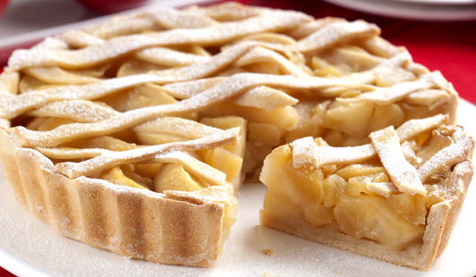

TORTA DE MAÇÃ
PREPARO - 40 MIN
RENDIMENTO - 10 PORÇÕES
INGREDIENTES
MASSA:
- 1 e 1/2 pacotes de bolacha maisena
- 120 g de margarina sem sal
DOCE DE MAÇÃ:
- 11 maçãs Gala sem casca e raladas
- 9 colheres (sopa) de açúcar refinado
- 2 colheres (sopa) de canela
- 1 colher (sopa) suco de limão
CREMINHO:
- 1 lata de leite condensado
- 1 lata de creme de leite
- 4 gemas
- baunilha a gosto
MODO DE PREPARO
- Triture a bolacha no processador (pode ser no liquidificador) e adicione a margarina até obter uma farofa úmida e homogênea
- Forre a base de uma fôrma de fundo removível
- Reserve
- Leve ao fogo médio: a maçã ralada, o açúcar e o limão e cozinhe até a a água secar
- Acrescente a canela e deixe esfriar e após isso espalhe sobre a base de biscoitos
- Reserve
- Leve ao fogo em uma panela: o leite condensado, as gemas e a baunilha e mexa até engrossar
- Desligue o fogo e acrescente o creme de leite
- Despeje por cima do doce de maçã e polvilhe com canela
- Leve a torta para assar em forno preaquecido a 180°C por cerca de 20 minutos
- Servir gelada